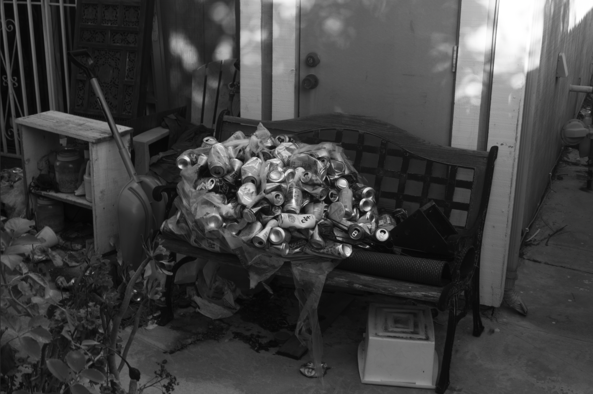

mdsnsnts (Madison Santos, any pronouns) is an undergrad art student and the University of California Santa Cruz. They mainly focus on printmaking and digital media, but also enjoys exploring other mediums. Born and raised in Los Angeles, California, their work focuses on themes of identity and belonging, often discussing their Filipino-American identity and the disconnect that can come with being an overseas Filipino. Other hobbies include music, bike riding, and watching professional basketball.

self portrait